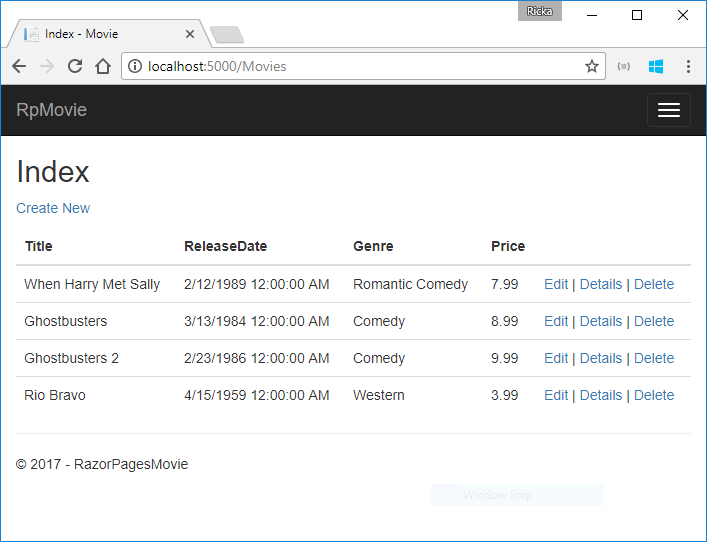
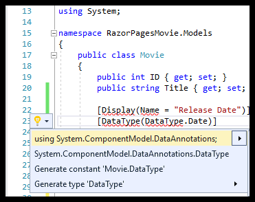

Updating the generated pages
We have a good start to the movie app, but the presentation is not ideal. We don't want to see the time (12:00:00 AM in the image below) and ReleaseDate should be Release Date (two words).

Update the generated code
Open the Models/Movie.cs file and add the highlighted lines shown in the following code:
using System;
namespace RazorPagesMovie.Models
{
public class Movie
{
public int ID { get; set; }
public string Title { get; set; }
[Display(Name = "Release Date")]
[DataType(DataType.Date)]
public DateTime ReleaseDate { get; set; }
public string Genre { get; set; }
public decimal Price { get; set; }
}
}
Right click on a red squiggly line > ** Quick Actions and Refactorings**.

Select using System.ComponentModel.DataAnnotations;

Visual studio adds using System.ComponentModel.DataAnnotations;.
We'll cover DataAnnotations in the next tutorial. The Display attribute specifies what to display for the name of a field (in this case "Release Date" instead of "ReleaseDate"). The DataType attribute specifies the type of the data (Date), so the time information stored in the field is not displayed.
Browse to Pages/Movies and hover over an Edit link to see the target URL.

The Edit, Details, and Delete links are generated by the Anchor Tag Helper in the Pages/Movies/Index.cshtml file.
@foreach (var item in Model.Movies) {
<tr>
<td>
@Html.DisplayFor(modelItem => item.Title)
</td>
<td>
@Html.DisplayFor(modelItem => item.ReleaseDate)
</td>
<td>
@Html.DisplayFor(modelItem => item.Genre)
</td>
<td>
@Html.DisplayFor(modelItem => item.Price)
</td>
<td>
<a asp-page="./Edit" asp-route-id="@item.ID">Edit</a> |
<a asp-page="./Details" asp-route-id="@item.ID">Details</a> |
<a asp-page="./Delete" asp-route-id="@item.ID">Delete</a>
</td>
</tr>
}
</tbody>
</table>
Tag Helpers enable server-side code to participate in creating and rendering HTML elements in Razor files. In the preceding code, the AnchorTagHelper dynamically generates the HTML href attribute value from the Razor Page (the route is relative), the asp-page, and the route id (asp-route-id). See URL generation for Pages for more information.
Use View Source from your favorite browser to examine the generated markup. A portion of the generated HTML is shown below:
<td>
<a href="/Movies/Edit?id=1">Edit</a> |
<a href="/Movies/Details?id=1">Details</a> |
<a href="/Movies/Delete?id=1">Delete</a>
</td>
The dynamically-generated links pass the movie ID with a query string (for example, http://localhost:5000/Movies/Details?id=2 ).
Update the Edit, Details, and Delete Razor Pages to use the "{id:int}" route template. Change the page directive for each of these pages to @page "{id:int}". Run the app and then view source. The generated HTML adds the ID to the path portion of the URL:
<td>
<a href="/Movies/Edit/1">Edit</a> |
<a href="/Movies/Details/1">Details</a> |
<a href="/Movies/Delete/1">Delete</a>
</td>
A request to the page with the "{id:int}" route template that does not include the integer will return an HTTP 404 (not found) error. For example, http://localhost:5000/Movies/Details will return a 404 error. To make the ID optional, append ? to the route constraint:
@page "{id:int?}"
Update concurrency exception handling
Update the OnPostAsync method in the Pages/Movies/Edit.cshtml.cs file. The following highlighted code shows the changes:
public async Task<IActionResult> OnPostAsync()
{
if (!ModelState.IsValid)
{
return Page();
}
_context.Attach(Movie).State = EntityState.Modified;
try
{
await _context.SaveChangesAsync();
}
catch (DbUpdateConcurrencyException)
{
if (!_context.Movies.Any(e => e.ID == Movie.ID))
{
return NotFound();
}
else
{
throw;
}
}
return RedirectToPage("./Index");
}
The previous code only detects concurrency exceptions when the first concurrent client deletes the movie, and the second concurrent client posts changes to the movie.
To test the catch block:
- Set a breakpoint on
catch (DbUpdateConcurrencyException) - Edit a movie.
- In another browser window, select the Delete link for the same movie, and then delete the movie.
- In the previous browser window, post changes to the movie.
Production code would generally detect concurrency conflicts when two or more clients concurrently updated a record. See Handling concurrency conflicts for more information.
Posting and binding review
Examine the Pages/Movies/Edit.cshtml.cs file:
public class EditModel : PageModel
{
private readonly RazorPagesMovie.Models.MovieContext _context;
public EditModel(RazorPagesMovie.Models.MovieContext context)
{
_context = context;
}
[BindProperty]
public Movie Movie { get; set; }
public async Task<IActionResult> OnGetAsync(int? id)
{
if (id == null)
{
return NotFound();
}
Movie = await _context.Movies.SingleOrDefaultAsync(m => m.ID == id);
if (Movie == null)
{
return NotFound();
}
return Page();
}
public async Task<IActionResult> OnPostAsync()
{
if (!ModelState.IsValid)
{
return Page();
}
_context.Attach(Movie).State = EntityState.Modified;
try
{
await _context.SaveChangesAsync();
}
catch (DbUpdateConcurrencyException)
{
if (!_context.Movies.Any(e => e.ID == Movie.ID))
{
return NotFound();
}
else
{
throw;
}
}
return RedirectToPage("./Index");
}
}
When an HTTP GET request is made to the Movies/Edit page (for example, http://localhost:5000/Movies/Edit/2):
- The
OnGetAsyncmethod fetches the movie from the database and returns thePagemethod. - The
Pagemethod renders the Pages/Movies/Edit.cshtml Razor Page. The Pages/Movies/Edit.cshtml file contains the model directive (@model RazorPagesMovie.Pages.Movies.EditModel), which makes the the movie model available on the page. - The Edit form is displayed with the values from the movie.
When the Movies/Edit page is posted:
The form values on the page are bound to the
Movieproperty. The[BindProperty]attribute enables Model binding.[BindProperty] public Movie Movie { get; set; }If there are errors in the model state (for example,
ReleaseDatecannot be converted to a date), the form is posted again with the submitted values.- If there are no model errors, the movie is saved.
The HTTP GET methods in the Index, Create, and Delete Razor pages follow a similar pattern. The HTTP POST OnPostAsync method in the Create Razor Page follows a similar pattern to the OnPostAsync method in the Edit Razor Page.
Search is added in the next tutorial.